Ricognizione completa dell'interfaccia, schermata per schermata, con screenshot presi dall'app in esecuzione (emulatore Android core36, 1080×2400, densità 420dpi, build debug del 4 agosto 2026, dopo il restyling di UI e navigazione). I dati mostrati sono un set di prova: 25 allenamenti su ~9 settimane, 4 schede preimpostate, libreria di 26 esercizi.
Tutti gli screenshot sono nella cartella img/.
Tutto il look dell'app nasce da lib/theme.dart. Non ci sono colori sparsi nelle schermate: le variabili globali (kAccent, kBg, kSurface…) vengono riscritte da AppTheme.apply() ogni volta che cambi tema o accento, e ogni widget le legge.
Accento — 6 preset + colore libero:
| Preset | Nome | Primario | Secondario |
|---|---|---|---|
obsidian | Obsidian (default) | #8B5CF6 viola | #6366F1 |
ocean | Oceano | #3B82F6 blu | #06B6D4 |
emerald | Smeraldo | #10B981 verde | #34D399 |
crimson | Cremisi | #EF4444 rosso | #F97316 |
amber | Ambra | #F59E0B ambra | #FBBF24 |
rose | Rosa | #EC4899 rosa | #F472B6 |
custom | libero | scelto da te | derivato: +24° di tinta, −8% saturazione, +10% luminosità |
Superfici e testo:
| Ruolo | Tema scuro | Tema chiaro |
|---|---|---|
Sfondo (kBg) | #0A0A0C | #F6F6F9 |
Superficie card (kSurface) | #131316 | #FFFFFF |
Superficie 2 — input, righe serie (kSurface2) | #1B1B1F | #EFEFF4 |
Superficie 3 — bordi, divisori (kSurface3) | #2A2A30 | #D8D8DE |
Testo primario (kText) | #F5F5F7 | #17171B |
Testo secondario (kText2) | #A6A6B0 | #54545E |
Testo terziario (kText3) | #5B5B66 | #9E9EA8 |
Colori semantici (fissi, non cambiano con l'accento): rosso #EF4444 (azioni distruttive), verde #4ADE80 (miglioramenti, stimolo leggero), ambra #FB923C (serie "con aiuto", stimolo moderato, record), blu #60A5FA (drop set).
Font unico: Inter (via google_fonts), usato per tutta l'app.
| Stile | Uso | Dimensione / peso |
|---|---|---|
displayLarge | titoli grossi | 28 / w600, tracking −0.4 |
displayMedium | titolo di pagina ("Domenica", "Storico") | 24 / w600, tracking −0.3 |
displaySmall | titoli sezione | 20 / w600, tracking −0.2 |
| AppBar | titolo delle schermate di secondo livello | 19 / w600 |
| Corpo | testo normale | 14–16 |
| Etichette | tag, badge, label maiuscole | 10–12.5, spesso letterSpacing positivo |
Le label di sezione ("PETTO", "SESSIONI RECENTI", "PESO (KG)") sono in maiuscolo, piccole, in kText3, con spaziatura tra le lettere: sono l'unico elemento "tipografico decorativo" dell'app.
theme.dart: card 18 (kRadiusCard), controlli 12 (kRadiusControl), bottom sheet 28 (kRadiusSheet), pillole (kRadiusPill). In pratica trovi anche 14–16 per bottoni e chip, 20–22 per dialog e fumetti del tour.elevation: 0 ovunque — la profondità è data dal contrasto tra superfici, non dalle ombre).kSurface, bordo sottile kSurface3 al 60% di opacità, nessuna ombra.lib/widgets/widgets.dart)Il restyling ha spostato in widgets.dart tutto quello che prima ogni schermata si costruiva da sé. Oggi le cinque schede sono composizioni degli stessi pezzi:
| Componente | A cosa serve |
|---|---|
PageHeader | l'intestazione identica delle 5 schede: titolo, sottotitolo, azione a destra, riga opzionale sotto (ricerca o toggle) |
AppSearchField | il campo di ricerca di Esercizi, Storico e Progressi |
SegmentedToggle | tutte le scelte binarie/ternarie a pillola (Grafici/Mappa corpo, Peso/Volume, IT/EN, Scuro/Chiaro, Incolla testo/Da file…) |
SeriesRow | la riga di una serie, con swipe per eliminare |
showAppSnack | l'unico modo di dare feedback, con "Annulla" opzionale |
LastSessionCard | il riquadro "sessione precedente / record" dentro lo sheet serie |
showAppSheet, SheetTitle, confirmDialog | sheet e dialog standard |
AppCard, SectionTitle, EmptyState, StatCard | i mattoni delle liste e delle pagine di dettaglio |
SeriesBadge, SeriesNumBadge, DropsDisplay, RestBadge, RestPickerDialog, CategoryChip, MuscleTag, RatingBadge | i pezzi piccoli ricorrenti |
Sfondo nero pieno, logo GYMLOG con icona manubrio in accento, testo del passo, opzioni a card grandi, e in basso il bottone primario a destra + indicatore a puntini (quello attivo diventa una barretta).
| Lingua | Formato data | Tema + accento |
|---|---|---|
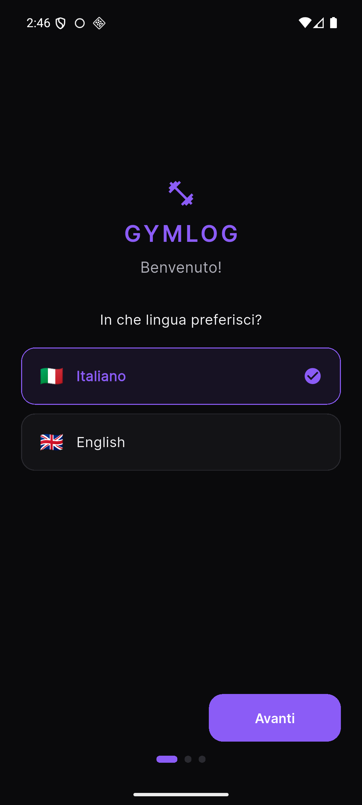 | 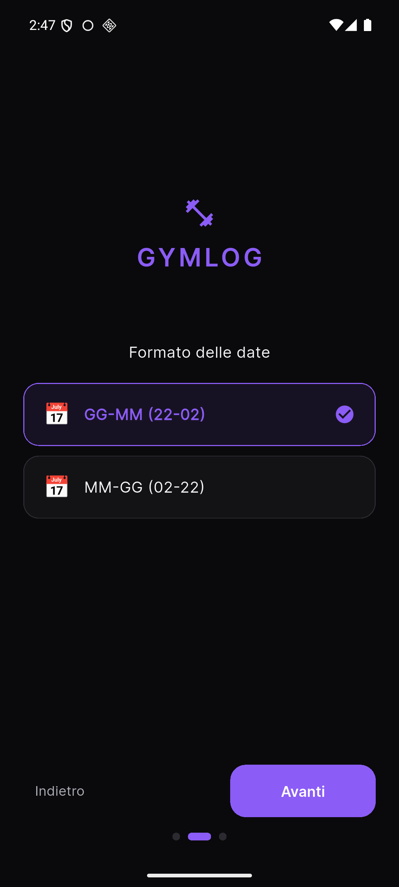 | 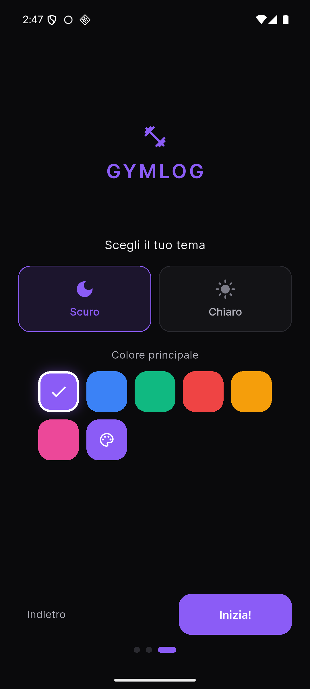 |
Le card selezionate si riconoscono da tre segnali insieme: bordo accento, fondo accento al 10%, testo in accento + spunta a destra. Gli emoji bandiera/calendario fanno da icona.
Il selettore colore libero è un dialog dedicato con area saturazione/luminosità, slider di tinta, anteprima circolare e campo HEX:
Dopo il setup parte un tour costruito in casa (widgets/app_tour.dart): un overlay nero al 72% con un "buco" ritagliato sull'elemento spiegato, bordo luminoso in accento intorno al buco, e un fumetto che si posiziona sopra o sotto a seconda di dove c'è più spazio. Il fumetto ha il contatore 1/4 in un badge accento, titolo, testo e i bottoni Salta / Avanti.
| 1 — Aggiungi esercizi | 2 — Giorni preimpostati | 3 — Nuovo giorno | 4 — Tutto il resto |
|---|---|---|---|
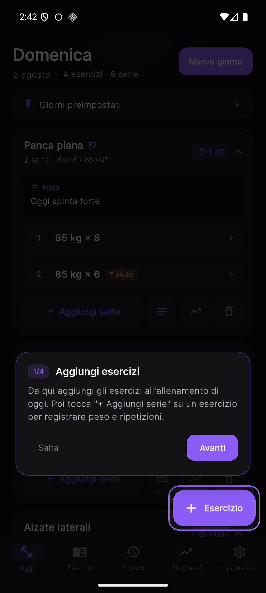 | 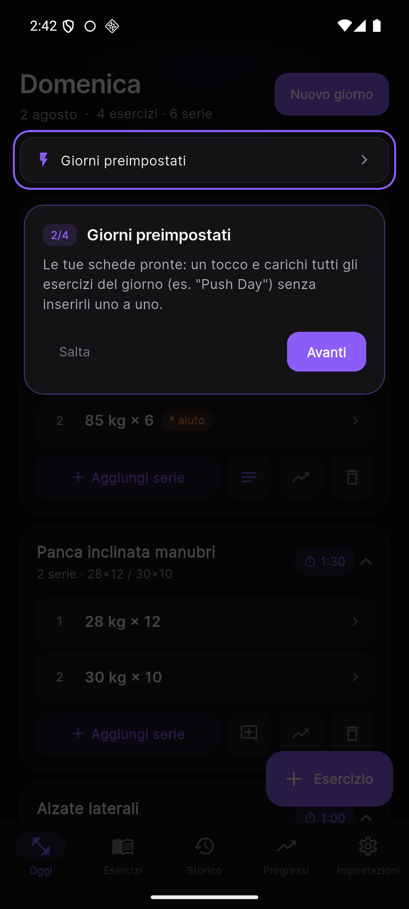 | 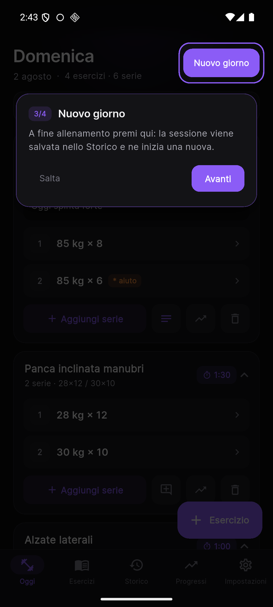 | 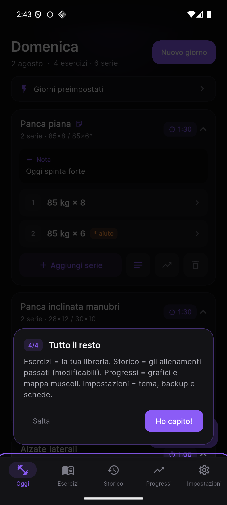 |
Si può rilanciare da Impostazioni → "Rivedi il tour".
Dopo il setup c'è una sola shell (MainShell) con 5 tab in un IndexedStack (le schermate restano vive, non si ricostruiscono quando cambi tab):
Oggi · Esercizi · Storico · Progressi · Impostazioni
Icona outline quando è spenta, icona piena + pillola accento + label in accento quando è attiva.
Ogni scheda è avvolta nel proprio ScaffoldMessenger: le snackbar appartengono alla scheda che le ha generate e il pulsante flottante si sposta in su per lasciarle spazio, invece di finirci sotto.
Tutte e cinque le schede si aprono con lo stesso PageHeader — titolo grande, sottotitolo di contesto ("26 esercizi", "25 allenamenti · Questo mese: 1"), eventuale azione a destra e, subito sotto, ricerca o toggle. Le vecchie AppBar disomogenee non ci sono più: le AppBar sopravvivono solo nelle schermate di secondo livello (grafico esercizio, editor scheda, importa), dove servono per la freccia "indietro".
La schermata di lavoro. In alto un alone radiale dell'accento al 10% che sfuma verso il nero: è l'unico effetto "atmosferico" dell'app.
Header: giorno della settimana in grande, sotto la data + riepilogo "4 esercizi · 6 serie" (+ badge voto se la sessione è già stata valutata), e a destra il bottone Nuovo giorno. Subito sotto, la riga Giorni preimpostati per caricare una scheda intera.
| Vuoto | Con allenamento | Scorrendo |
|---|---|---|
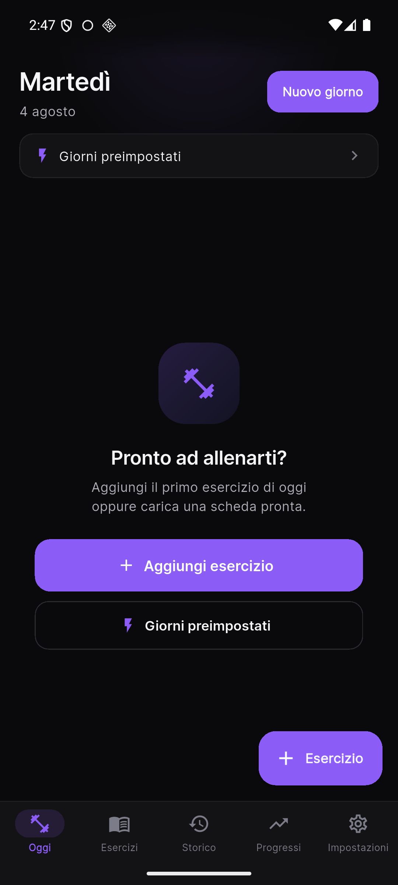 | 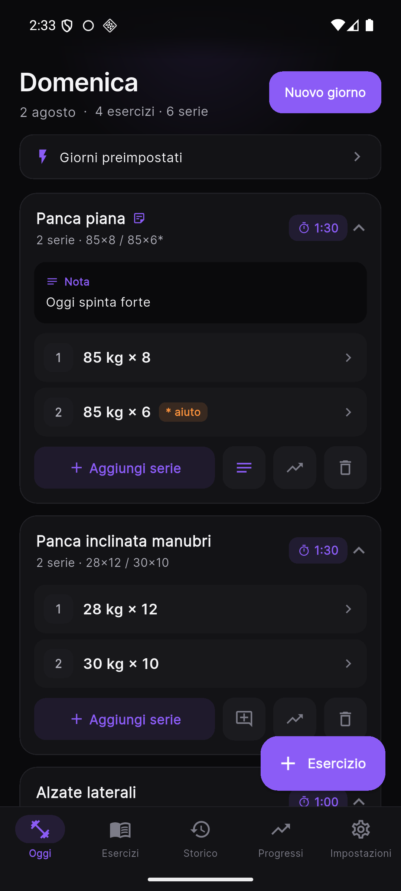 | 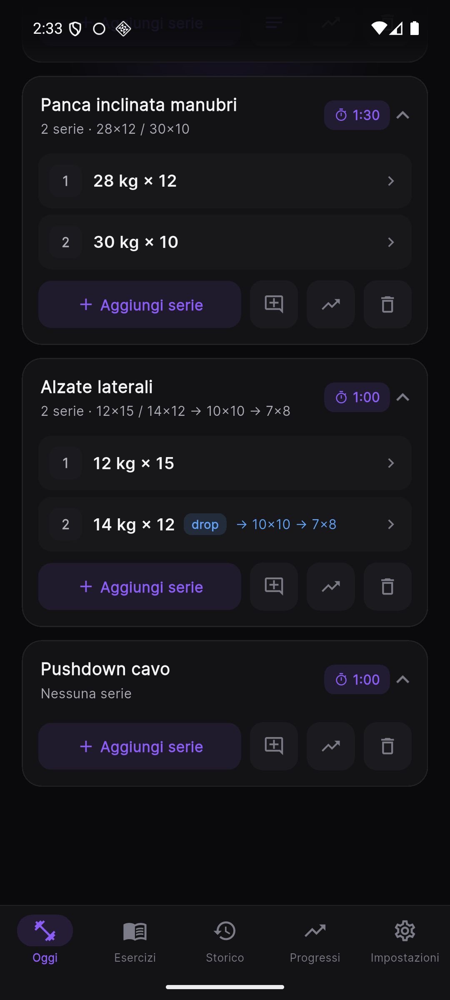 |
Lo stato vuoto non è solo un'icona: propone le due azioni possibili ("Aggiungi esercizio" primario, "Giorni preimpostati" secondario).
Card esercizio: nome + icona nota se presente, sottotitolo con il riassunto delle serie (2 serie · 85×8 / 85×6*), badge del recupero (⏱ 1:30) e freccia per collassare. Poi la nota (se c'è) in un riquadro dedicato, e una riga per serie (SeriesRow): numero in un quadratino, 85 kg × 8 in grande, eventuale badge del tipo, chevron a destra. La riga intera è toccabile per modificare, e si scorre verso sinistra per eliminarla: parte subito, con una snackbar "Serie eliminata · Annulla" invece di una conferma preventiva. In fondo il bottone + Aggiungi serie a piena larghezza, con accanto i bottoni nota, progressi e cestino.
Codifica dei tipi di serie: nessun badge = normale; * aiuto in ambra = serie con aiuto; drop in blu seguito dalla catena → 10×10 → 7×8 = drop set.
FAB esteso + Esercizio in basso a destra.
Il pezzo di UI più curato dell'app. Bottom sheet con:
−2.5 / +2.5;−1 / +1;Scegliendo Drop set compaiono le righe dei drop (badge D1, peso, reps, "×") e il bottone Aggiungi drop, tutto in blu per coerenza con il badge nella lista.
| Serie normale | Drop set |
|---|---|
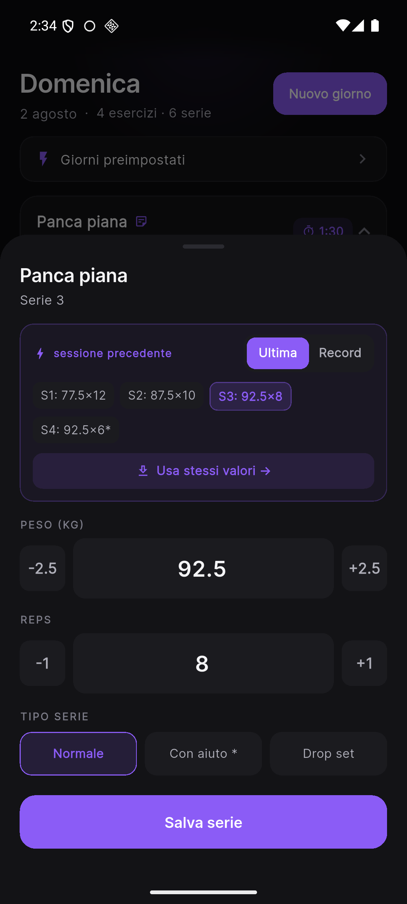 | 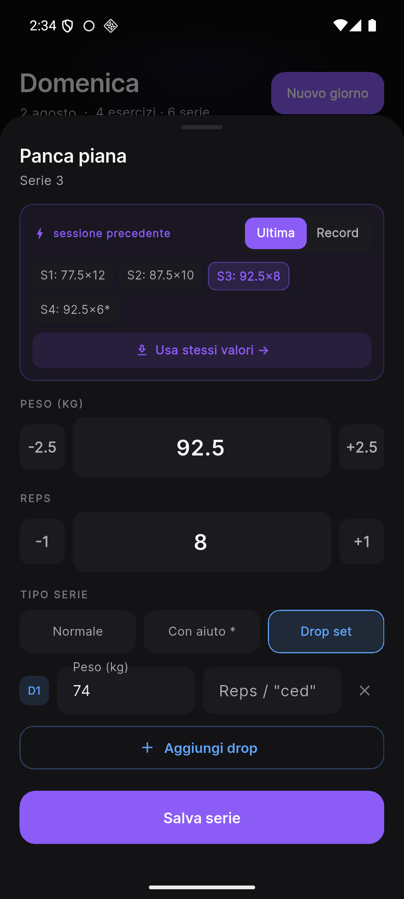 |
| Recupero | Nota esercizio | Voto sessione | Conferma eliminazione |
|---|---|---|---|
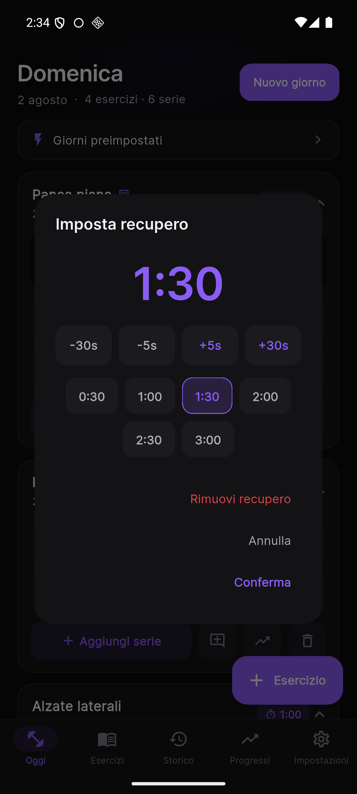 | 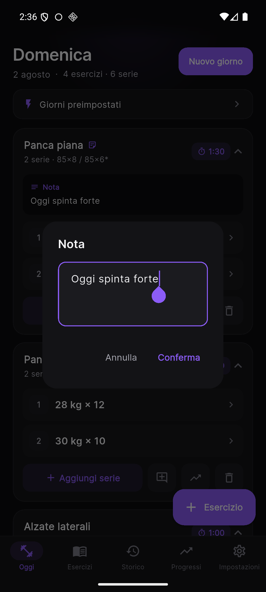 | 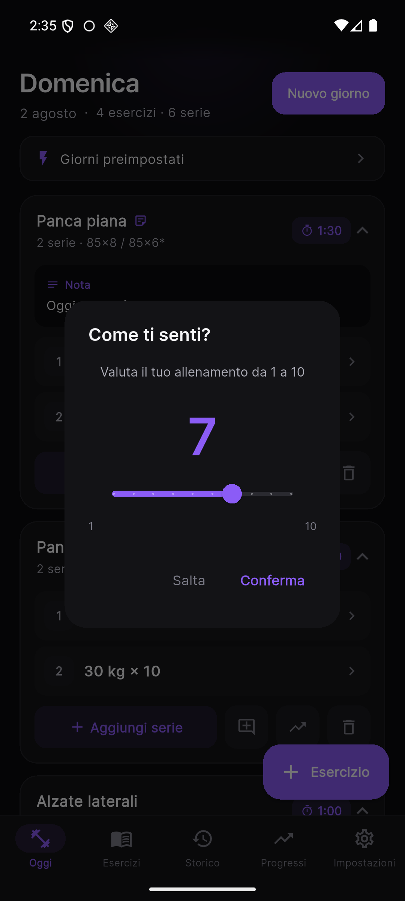 | 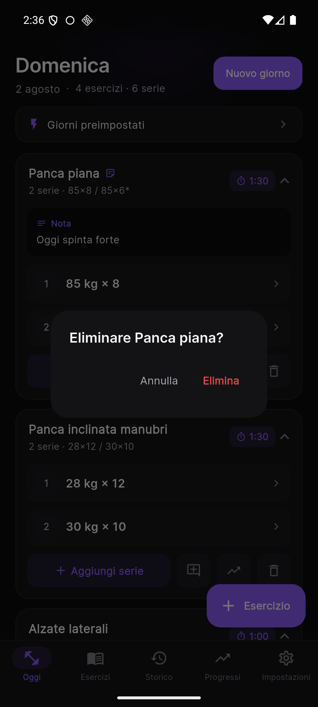 |
| Giorni preimpostati (sheet) | Aggiungi esercizio | Nuovo esercizio |
|---|---|---|
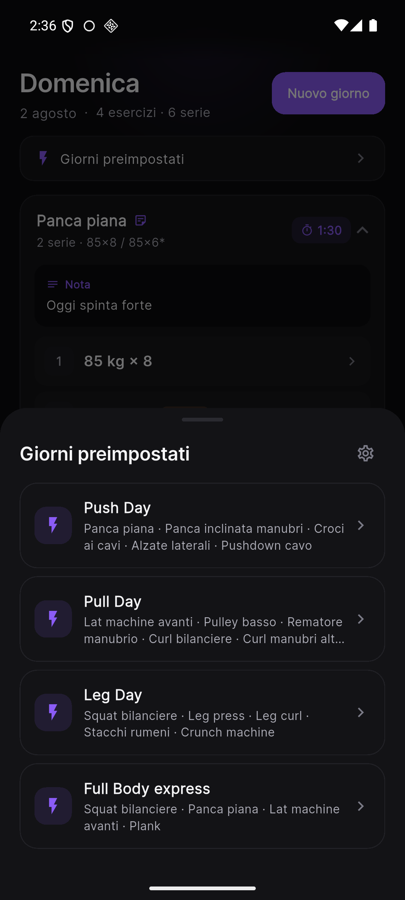 | 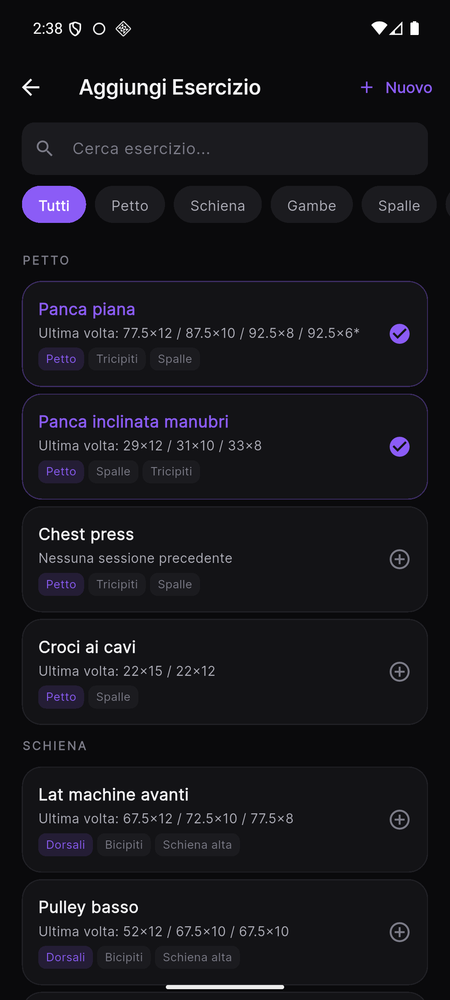 | 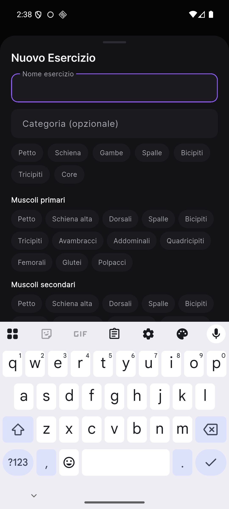 |
Nel picker ogni esercizio mostra "Ultima volta: 77.5×12 / 87.5×10 / 92.5×8 / 92.5×6*" o "Nessuna sessione precedente", più i tag muscolari (primario in accento, secondari grigi). Quelli già inseriti oggi hanno bordo accento, nome in accento e spunta piena al posto del "+". In alto: ricerca e filtri per categoria a pillole.
La creazione di un nuovo esercizio chiede nome, categoria (a scelta libera o dalle pillole) e i muscoli primari e secondari — è questa informazione che alimenta la mappa del corpo.
Lista di tutti gli esercizi raggruppati per categoria — con il conteggio accanto al nome della sezione (PETTO · 4) — ricerca e filtri a pillole in cima, FAB "+" per crearne di nuovi. Ogni riga: nome, tag muscolari, il peso massimo in un badge accento e il menu "…".
| Libreria | Menu di un esercizio |
|---|---|
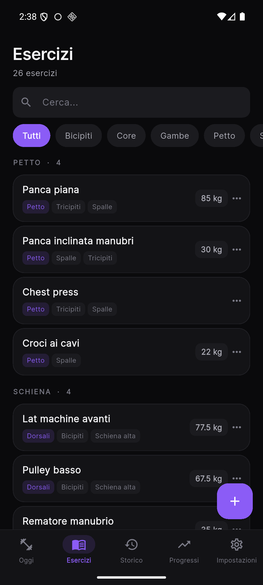 | 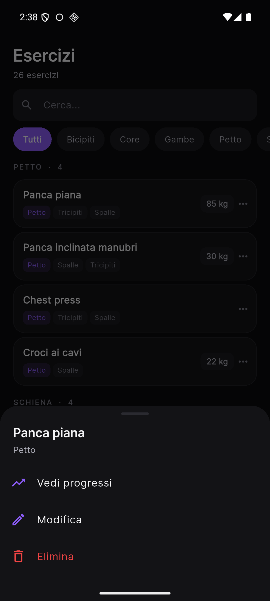 |
Il menu è uno sheet intitolato col nome dell'esercizio e la sua categoria, con tre voci: Vedi progressi (porta direttamente al grafico, senza passare dalla scheda Progressi), Modifica, Elimina in rosso.
L'app parte con 26 esercizi predefiniti già categorizzati (Petto, Schiena, Gambe, Spalle, Bicipiti, Tricipiti, Core).
Un elenco di sessioni, una card per giorno, ordinate dalla più recente, raggruppate per mese (AGOSTO 2026) e filtrabili con la ricerca per esercizio.
| Vuoto | Elenco | Sessione aperta | Modifica di una serie |
|---|---|---|---|
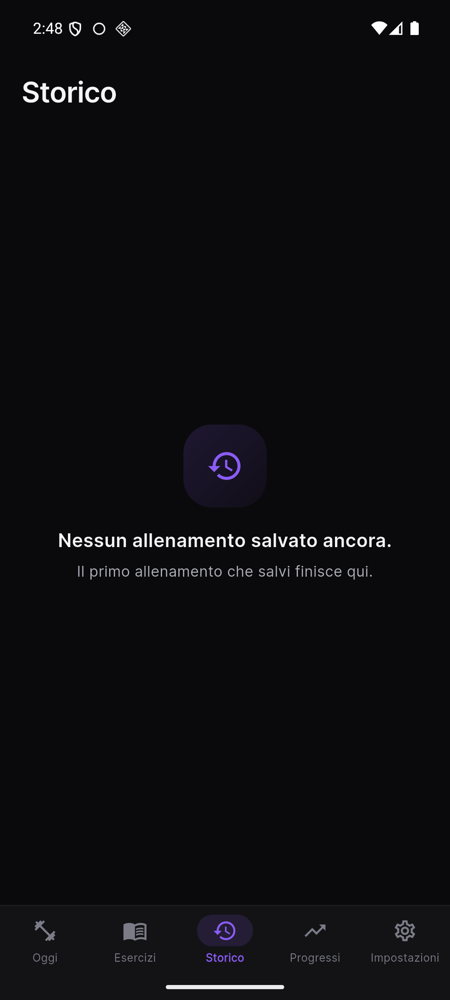 | 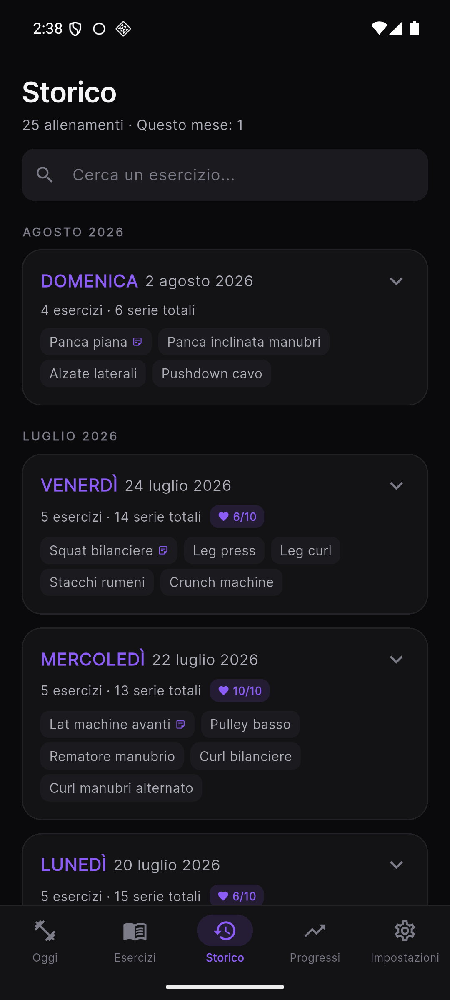 | 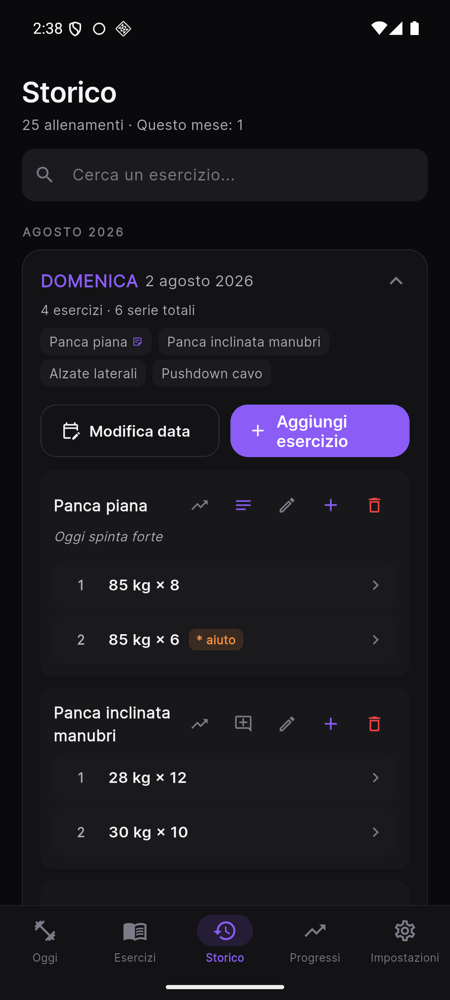 | 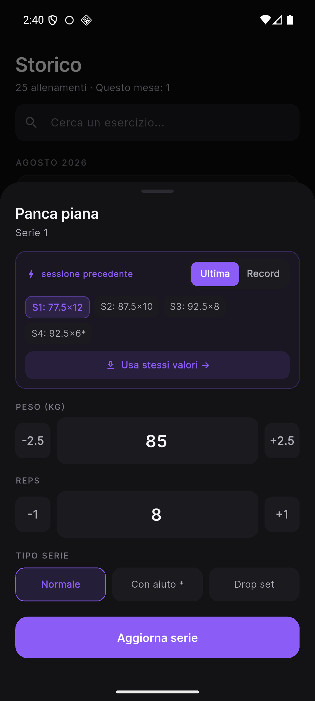 |
Card chiusa: giorno della settimana in MAIUSCOLO accento + data, riga "5 esercizi · 14 serie totali", badge voto (♥ 10/10) e i nomi degli esercizi come chip (con l'iconcina nota su quelli che ne hanno una).
Card aperta: compaiono "Modifica data" e "Aggiungi esercizio", poi ogni esercizio in un blocco con le sue azioni in riga (progressi, nota, rinomina, aggiungi serie, elimina in rosso) e l'elenco completo delle serie. Toccando una serie si apre lo stesso sheet di Oggi, già compilato. Lo storico è quindi completamente modificabile a posteriori, non è un archivio in sola lettura.
Due sotto-schede in un SegmentedToggle: Grafici e Mappa corpo.
| Vuoto | Elenco esercizi | Peso massimo | Volume |
|---|---|---|---|
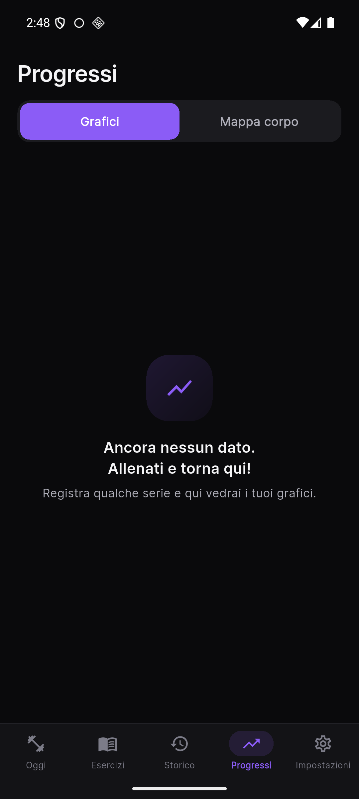 | 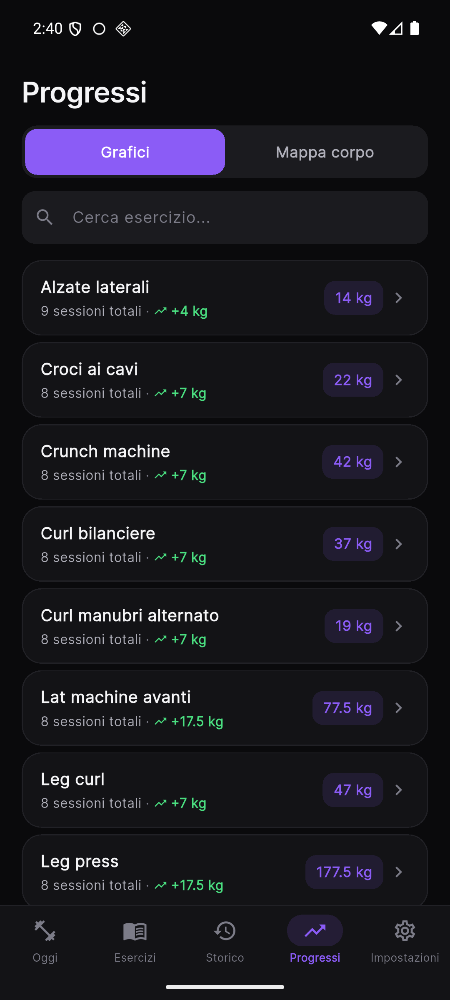 | 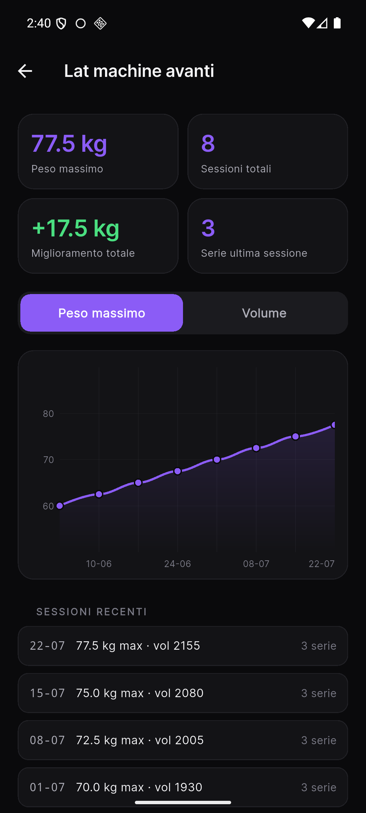 | 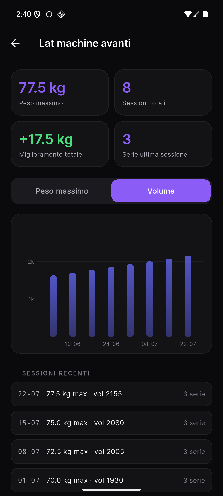 |
L'elenco mostra per ogni esercizio il numero di sessioni, il miglioramento in verde (↗ +17.5 kg) e il record in un badge accento. Toccandolo si apre la scheda dell'esercizio con:
dd-MM contate all'indietro dall'ultima sessione, così l'ultima data c'è sempre ed è distanziata come le altre;22-07 · 77.5 kg max · vol 2155 · 3 serie.Due sagome (FRONTE / RETRO) dentro una card, colorate in base alle serie effettive per gruppo muscolare nella settimana selezionata (i muscoli secondari contano metà: da qui i "4.5 serie effettive").
| Settimana in corso | Settimana piena | Legenda ed elenco |
|---|---|---|
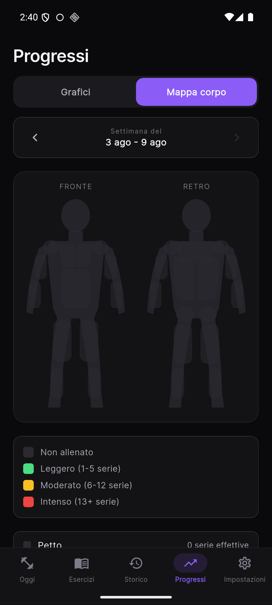 | 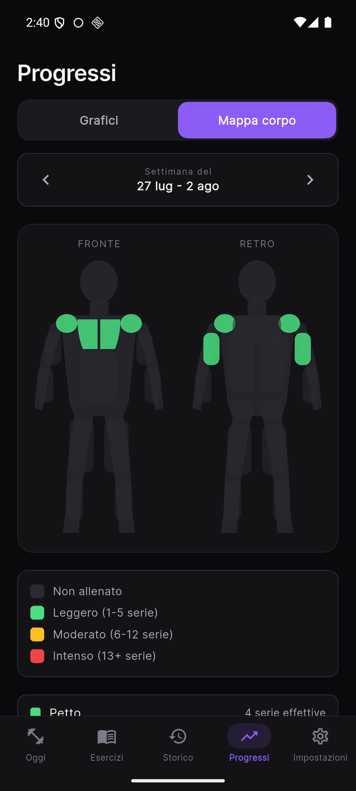 | 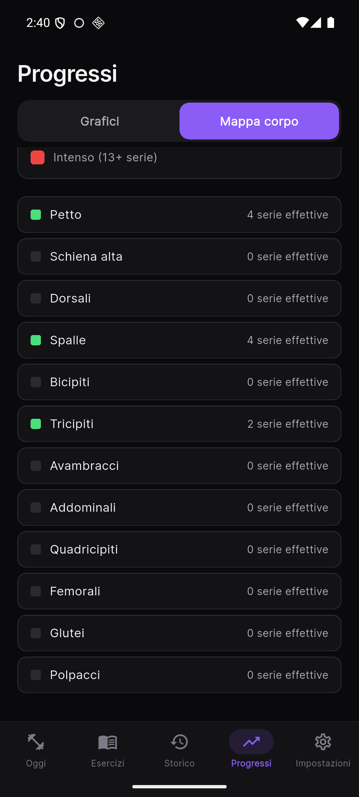 |
Scala: grigio = non allenato, verde #4ADE80 = leggero (1-5 serie), ambra #FBBF24 = moderato (6-12), rosso #EF4444 = intenso (13+). Il corpo "spento" è volutamente poco contrastato, così i muscoli allenati saltano all'occhio anche di sfuggita. Sopra c'è il navigatore di settimana (‹ Settimana del 27 lug - 2 ago ›, freccia avanti disabilitata sul futuro), sotto la legenda e l'elenco di tutti i 12 gruppi muscolari con il conteggio.
| Aspetto | Backup e statistiche | Cartella dati e zona pericolo |
|---|---|---|
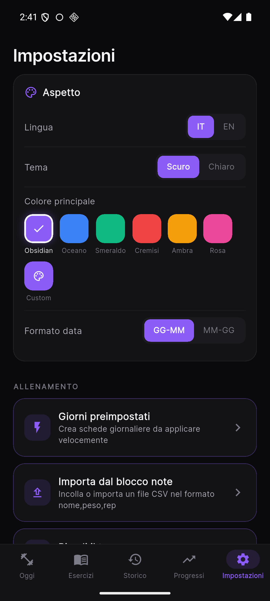 | 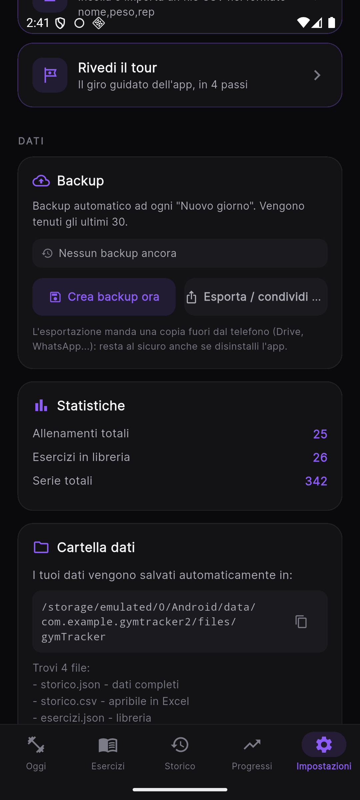 | 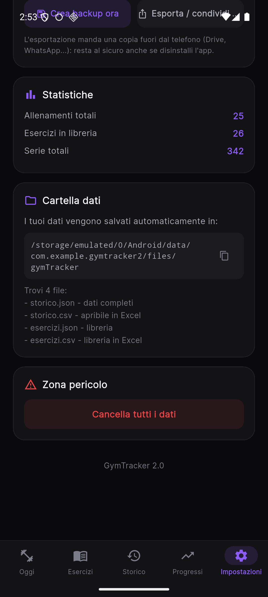 |
La pagina è divisa in tre gruppi con etichetta di sezione (ASPETTO nella prima card, poi ALLENAMENTO e DATI):
SegmentedToggle: il segmento attivo è pieno di accento con testo bianco.In basso la versione: GymTracker 2.0.
| Elenco schede | Editor scheda |
|---|---|
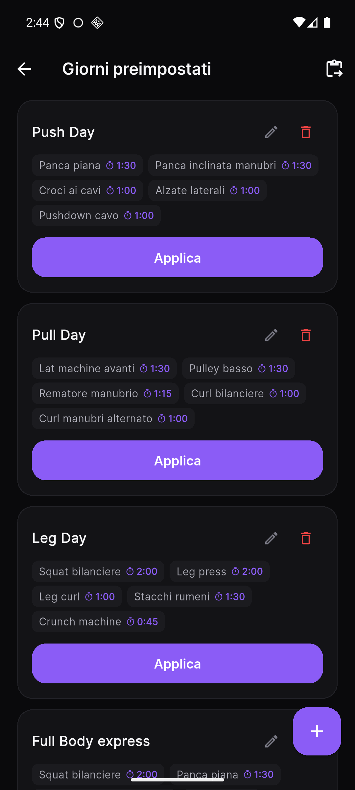 | 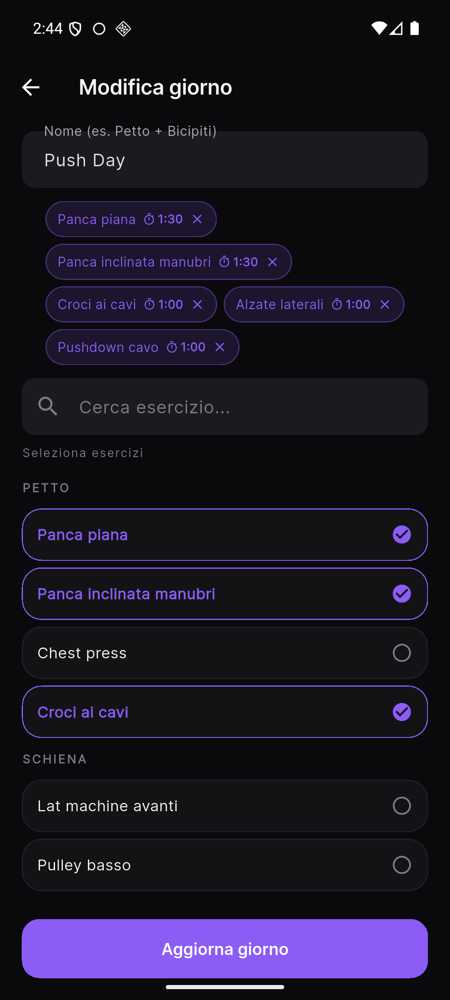 |
Ogni scheda è una card con nome, matita e cestino, gli esercizi come chip con il proprio recupero (Panca piana ⏱ 1:30) e un bottone Applica a piena larghezza. L'editor ha nome, chip degli esercizi scelti (rimovibili con "×") e sotto la libreria completa con selezione a spunta.
Card informativa in cima con il formato accettato (nome esercizio,peso,rep,peso,rep,…, * = con aiuto, peso-drop,rep-rep = drop set) ed esempi, toggle Incolla testo / Da file, selettore della data e area di testo monospaziata con placeholder di esempio.
Lo stesso schermo cambia completamente pelle senza cambiare struttura:
| Chiaro — Oggi | Chiaro — Impostazioni | Chiaro — Mappa corpo |
|---|---|---|
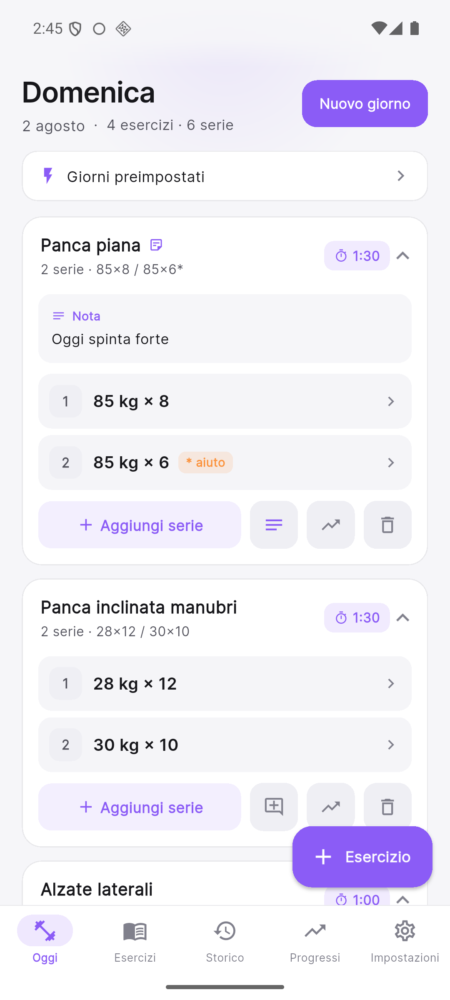 | 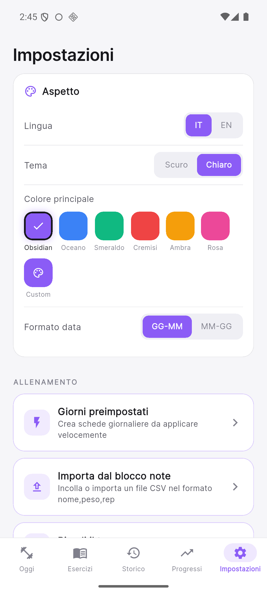 | 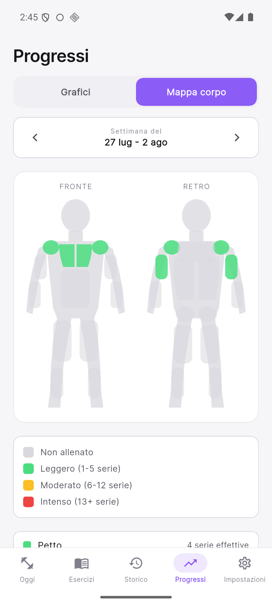 |
| Accento Smeraldo | Interfaccia in inglese |
|---|---|
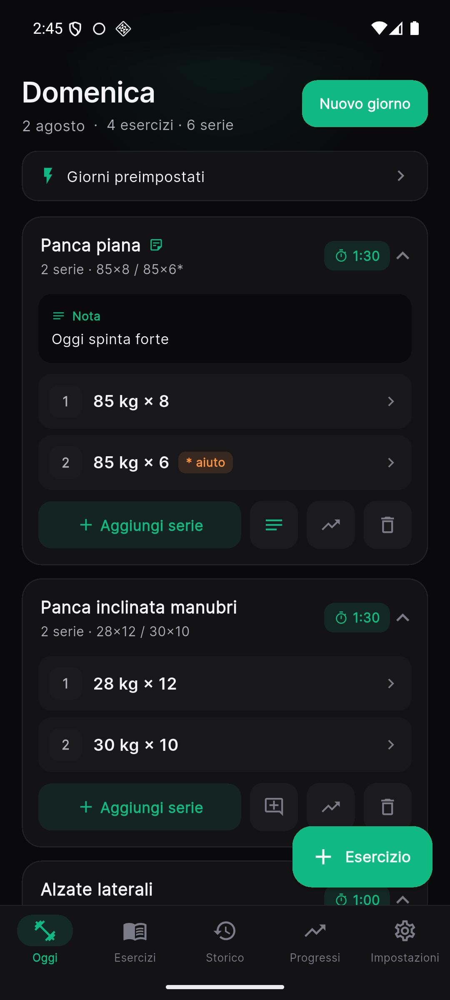 | 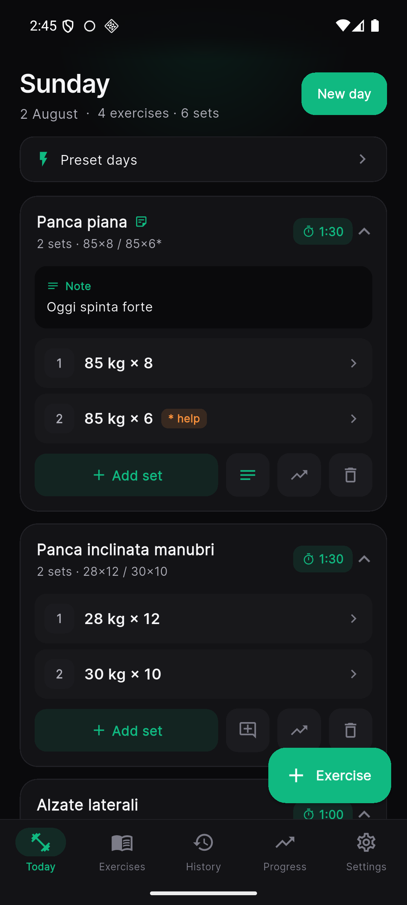 |
Nel tema chiaro le card diventano bianche su sfondo #F6F6F9 e i fondi "tenui" dei bottoni secondari diventano accento molto diluito. L'accento tocca tutto: bottoni, badge, icone attive, bordi selezionati, grafici, alone dell'header. Il cambio è immediato su tutte le schede, inclusa la mappa del corpo. La traduzione è totale sull'UI (i nomi degli esercizi e le note restano ovviamente come li hai scritti).
PageHeader: cambia il contenuto, non la struttura, e il titolo dice sempre anche "quanto" (26 esercizi, 25 allenamenti).kText2, e — dove ha senso — le azioni per uscire dallo stato vuoto.Il documento fotografa l'app dopo l'intervento su UI e navigazione. In sintesi:
PageHeader) e ricerca standard su Oggi, Esercizi, Storico, Progressi, Impostazioni, al posto di AppBar e intestazioni diverse su ogni scheda.Difetti trovati durante la ricognizione e risolti: